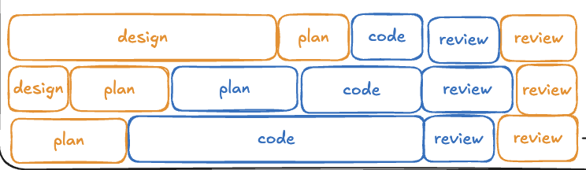

practice - using vibe coded slop for prototyping
^ agentic engineering practice - using vibe coded slop for link not tracked
Practice
vibe code some large number of ideas and see what works, then once you like one, lock it in with link not tracked
Status 🟡
I occasionally do this but suspect that I should be doing it much more. Seems like it would fit well with worktree parallel development, where you spin off an experimental tree quickly.
I've recently been playing with link not tracked just a bit, and it feels like it might fit into this category. It's a bit like Claude's Artifacts back in the day. Divorced from your code, but perhaps that's a good thing, for experimentation. There was also a cool recent talk v Github researcher on how we should collaborate with agents in teams - 2026-04 that showed what a collaborative early stage tool that sort of facilitated a group working on this stuff...

... where that iteration is actually part of the SDLC building block -- design phase. It's complicated. I suspect at the end it would get handed off to a developer who would then shape it to adhere to the non-functional requirements. Seems like a neat process, honestly.
Sources
v Github researcher on how we should collaborate with agents in teams - 2026-04 shows multi-person collaboration
link not tracked lets you prototype
link not tracked talks about how if you bump into an unknown during your design and planning work, you can use link not tracked to another agent session where you run link not tracked
T article the unreasonable effectiveness of HTML - 2027-05 talks about link not tracked